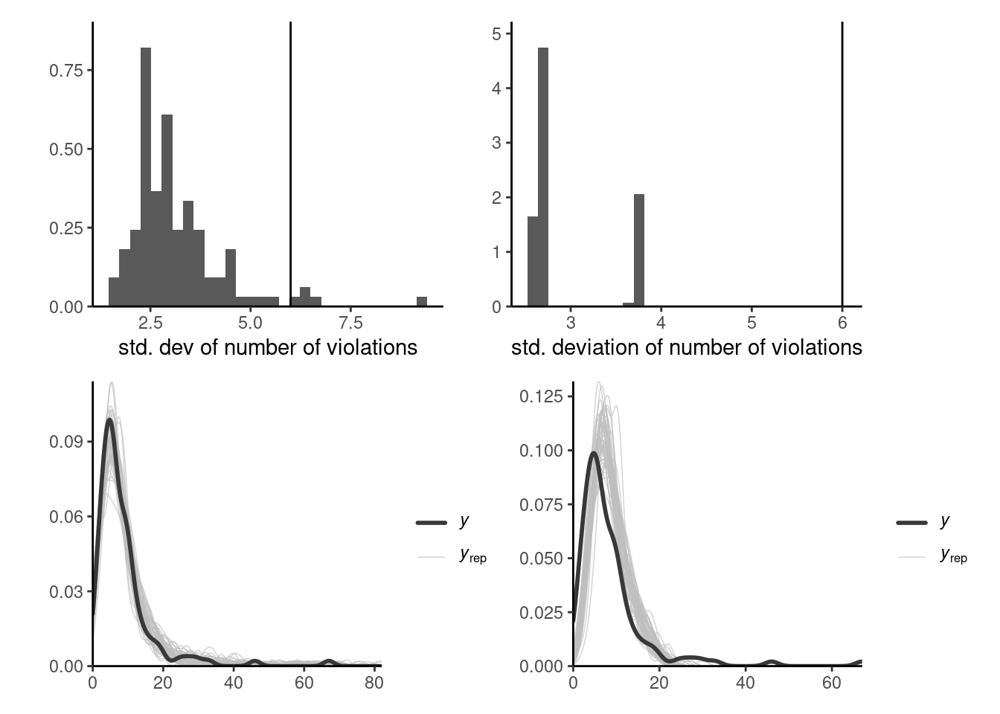
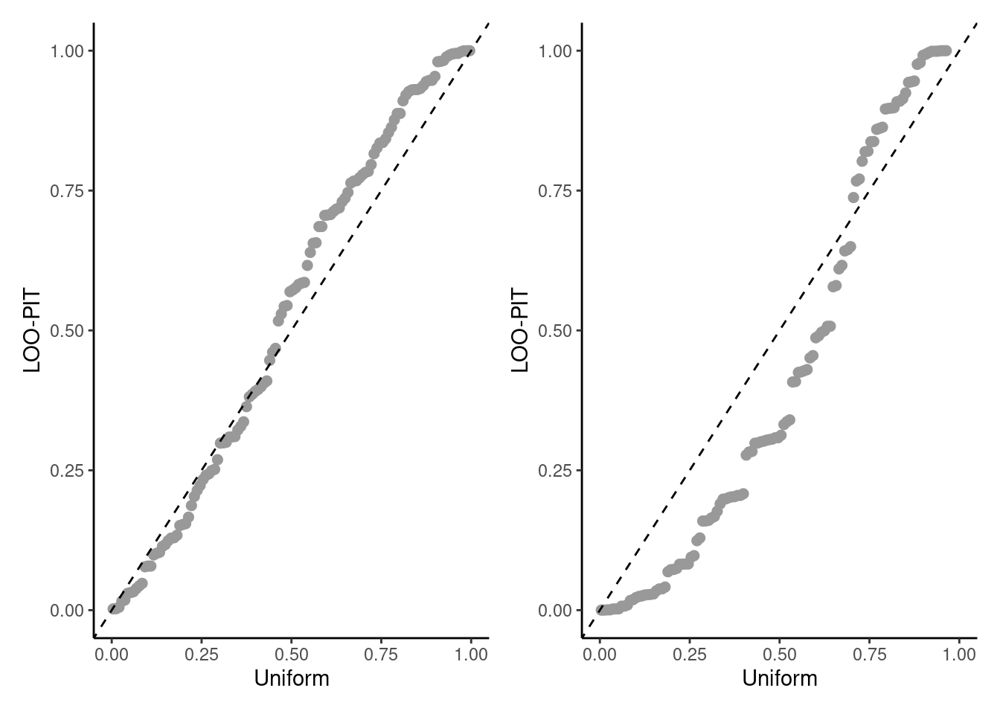

7 Bayesian workflow
For a given problem, there are many different Markov chain Monte Carlo algorithms that one can implement: they will typically be distinguished based on the running time and the efficiency (with algorithms providing chains that have low autocorrelation being better). Many visual diagnostics and standard tests can be used to diagnose lack of convergence, or inefficiency. The purpose of this section is to review these in turn.
The Bayesian workflow is a coherent framework for model construction, estimation and validation. It typically involves multiple iterations tuning, adapting and modifying both the models and the algorithms in the hope of achieving a model that is useful (Gelman et al. 2020); see also Michael Betancourt for excellent visualizations.
To illustrate these, we revisit the model from Example 3.16 with a penalized complexity prior for the individual effect \(\alpha_i\) and vague normal priors. We also fit a simple Poisson model with only the fixed effect, taking \(Y_{ij} \sim \mathsf{Poisson}\{\exp(\beta_j)\}\) with \(\beta_j \sim \mathsf{Gauss}(0,100)\) has much too little variability relative to the observations.
7.0.1 Trace plots
It is useful to inspect visually the Markov chain, as it may indicate several problems. If the chain drifts around without stabilizing around the posterior mode, then we can suspect that it hasn’t reached it’s stationary distribution (likely due to poor starting values). In such cases, we need to disregard the dubious draws from the chain by discarding the so-called warm up or burn in period. While there are some guarantees of convergence in the long term, silly starting values may translate into tens of thousands of iterations lost wandering around in regions with low posterior mass. Preliminary optimization and plausible starting values help alleviate these problems. Figure 7.1 shows the effect of bad starting values on a toy problem where convergence to the mode is relatively fast. If the proposal is in a flat region of the space, it can wander around for a very long time before converging to the stationary distribution.
If we run several chains, as in Figure 7.1, with different starting values, we can monitor convergence by checking whether these chains converge to the same target. A trace rank plots, shown on right panel of Figure 7.1, compares the rank of the values of the different chain at a given iteration: with good mixing, the ranks should switch frequently and be distributed uniformly across integers.
7.0.2 Diagnostics of convergence
Generally, one would run a MCMC algorithm. The first iterations, used during the burn in period to tune proposal variances and allow the chains to converge to the stationary distribution, are discarded. If visual inspection of the chains reveal that some of the chains for one or more parameters are not stationary until some iteration, we will discard all of these in addition.
The target of inference is functional (i.e., one-dimensional summaries of the chain): we need to have convergence of the latter, but also sufficient effective sample size for our averages to be accurate (at least to two significant digits).
For the Poisson example, the effective sample size for the \(\boldsymbol{\beta}\) for the multilevel model is a bit higher than 1000 with \(B=5000\) iterations, whereas we have for the simple naive model is \(1.028\times 10^{4}\) for \(B=10000\) draws, suggesting superefficient sampling. The dependency between \(\boldsymbol{\alpha}\) and \(\boldsymbol{\beta}\) is responsible for the drop in accuracy.
The coda (convergence diagnosis and output analysis) R package contains many tests. For example, the Geweke \(Z\)-score compares the averages for the beginning and the end of the chain: rejection of the null implies lack of convergence, or poor mixing.
Running multiple Markov chains can be useful for diagnostics. The Gelman–Rubin diagnostic \(\widehat{R},\) also called potential scale reduction statistic, is obtained by considering the difference between within-chains and between-chains variance. Suppose we run \(M\) chains for \(B\) iterations, post burn in. Denoting by \(\theta_{bm}\) the \(b\)th draw of the \(m\)th chain, we compute the global average \(\overline{\theta} = B^{-1}M^{-1}\sum_{b=1}^B \sum_{m=1}^m \theta_{bm}\) and similarly the chain sample average and variances, respectively \(\overline{\theta}_m\) and \(\widehat{\sigma}^2_m\) (\(m=1, \ldots, M\)). The between-chain variance and within-chain variance estimator are \[\begin{align*} \mathsf{Va}_{\text{between}} &= \frac{B}{M-1}\sum_{m=1}^M (\overline{\theta}_m - \overline{\theta})^2\\ \mathsf{Va}_{\text{within}} &= \frac{1}{M}\sum_{m=1}^m \widehat{\sigma}^2_m \end{align*}\] and we can compute \[\begin{align*} \widehat{R} = \left(\frac{\mathsf{Va}_{\text{within}}(B-1) + \mathsf{Va}_{\text{between}}}{B\mathsf{Va}_{\text{within}}}\right)^{1/2} \end{align*}\] The potential scale reduction statistic must be, by construction, larger than 1 in large sample. Any value larger than this is indicative of problems of convergence. While the Gelman–Rubin diagnostic is frequently reported, and any value larger than 1 deemed problematic, it is not enough to have approximately \(\widehat{R}=1\) to guarantee convergence, but large values are usually indication of something being amiss. Figure 7.2 shows two instances where the chains are visually very far from having the same average and this is reflected by the large values of \(\widehat{R}.\)

More generally, it is preferable to run a single chain for a longer period than run multiple chains sequentially, as there is a cost to initializing multiple times with different starting values since we must discard initial draws. With parallel computations, multiple chains are more frequent nowadays.
MCMC algorithms are often run thinning the chain (i.e., keeping only a fraction of the samples drawn, typically every \(k\) iteration). This is wasteful as we can of course get more precise estimates by keeping all posterior draws, whether correlated or not. The only argument in favor of thinning is limited storage capacity: if we run very long chains in a model with hundreds of parameters, we may run out of memory.
7.0.3 Posterior predictive checks
Posterior predictive checks can be used to compare models of varying complexity.One of the visual diagnostics, outlined in Gabry et al. (2019), consists in computing a summary statistic of interest from the posterior predictive (whether mean, median, quantile, skewness, etc.) which is relevant for the problem at hand and which we hope our model can adequately capture.
Suppose we have \(B\) draws from the posterior and simulate for each \(n\) observations from the posterior predictive \(p(\widetilde{\boldsymbol{y}} \mid \boldsymbol{y})\): we can benchmark summary statistics from our original data \(\boldsymbol{y}\) with the posterior predictive copies \(\widetilde{\boldsymbol{y}}_b.\) Figure 7.3 shows this for the two competing models and highlight the fact that the simpler model is not dispersed enough. Even the more complex model struggles to capture this additional heterogeneity with the additional variables. One could go back to the drawing board and consider a negative binomial model.

7.0.4 Information criterion
The widely applicable information criterion (Watanabe 2010) is a measure of predictive performance that approximates the cross-validation loss. Consider first the log pointwise predictive density, defined as the expected value over the posterior distribution \(p(\boldsymbol{\theta} \mid \boldsymbol{y}),\) \[\begin{align*} \mathsf{LPPD}_i = \mathsf{E}_{\boldsymbol{\theta} \mid \boldsymbol{y}} \left\{ \log p(y_i \mid \boldsymbol{\theta})\right\}. \end{align*}\] The higher the value of the predictive density \(\mathsf{LPPD}_i,\) the better the fit for that observation.
As in general information criteria, we sum over all observations, adding a penalization factor that approximates the effective number of parameters in the model, with \[\begin{align*} n\mathsf{WAIC} = -\sum_{i=1}^n \mathsf{LPPD}_i + \sum_{i=1}^n \mathsf{Va}_{\boldsymbol{\theta} \mid \boldsymbol{y}}\{\log p(y_i \mid \boldsymbol{\theta})\} \end{align*}\] where we use again the empirical variance to compute the rightmost term. When comparing competing models, we can rely on their values of \(\mathsf{WAIC}\) to discriminate about the predictive performance. To compute \(\mathsf{WAIC},\) we need to store the values of the log density of each observation, or at least minimally compute the running mean and variance accurately pointwise at storage cost \(\mathrm{O}(n).\) Note that Section 7.2 of Gelman et al. (2013) define the widely applicable information criterion as \(2n \times \mathsf{WAIC}\) to make on par with other information criteria, which are defined typically on the deviance scale and so that lower values correspond to higher predictive performance.
An older criterion which has somewhat fallen out of fashion is the deviance information criterion of Spiegelhalter et al. (2002). It is defined as \[\begin{align*} \mathsf{DIC} = -2 \ell(\widetilde{\boldsymbol{\theta}}) + 2 p_D \end{align*}\] where \(p_D\) is the posterior expectation of the deviance relative to the point estimator of the parameter \(\widetilde{\boldsymbol{\theta}}\) (e.g., the maximum a posteriori or the posterior mean) \[\begin{align*} p_D = \mathsf{E}\{D(\boldsymbol{\theta}, \widetilde{\boldsymbol{\theta}}) \mid \boldsymbol{y}\}= \int 2 \{ \ell(\widetilde{\boldsymbol{\theta}}) - \ell(\boldsymbol{\theta})\} f(\boldsymbol{\theta} \mid \boldsymbol{y} \mathrm{d} \boldsymbol{\theta} \end{align*}\] The DIC can be easily evaluated by keeping track of the log likelihood evaluated at each posterior draw from a Markov chain Monte Carlo algorithm. The penalty term \(p_D\) is however not invariant to reparametrizations. Assuming we can derive a multivariate Gaussian approximation to the MLE under suitable regularity conditions, the \(\mathsf{DIC}\) is equivalent in large samples to \(\mathsf{AIC}.\) The \(\mathsf{DIC}\) is considered by many authors as not being a Bayesian procedure; see Spiegelhalter et al. (2014) and the discussion therein.
Example 7.1 (Information criteria for smartwatch and Bayesian LASSO) For the smartwatch model, we get a value of 3.07 for the complex model and 4.5: this suggests an improvement in using individual-specific effects.
#' WAIC
#' @param loglik_pt B by n matrix of pointwise log likelihood
WAIC <- function(loglik_pt){
-mean(apply(loglik_pt, 2, mean)) + mean(apply(loglik_pt, 2, var))
}We can also look at the predictive performance. For the diabetes data application with the Bayesian LASSO with fixed \(\lambda,\) the predictive performance is a trade-off between the effective number of parameter (with larger penalties translating into smaller number of parameters) and the goodness-of-fit. Figure 7.4 shows that the decrease in predictive performance is severe when estimates are shrunk towards 0, but the model performs equally well for small penalties.

Ideally, one would measure the predictive performance using the leave-one-out predictive distribution for observation \(i\) given all the rest, \(p(y_i \mid \boldsymbol{y}_{-i}),\) to avoid double dipping — the latter is computationally intractable because it would require running \(n\) Markov chains with \(n-1\) observations each, but we can get a good approximation using importance sampling. The loo package uses this with generalized Pareto smoothing to avoid overly large weights.
Once we have the collection of estimated \(p(y_i \mid \boldsymbol{y}_{-i}),\) we can assess the probability level of each observation. This gives us a set of values which should be approximately uniform if the model was perfectly calibrated. The probability of seeing an outcome as extreme as \(y_i\) can be obtained by simulating draws from the posterior predictive given \(\boldsymbol{y}_{-i}\) and computing the scaled rank of the original observation. Values close to zero or one may indicate outliers.
